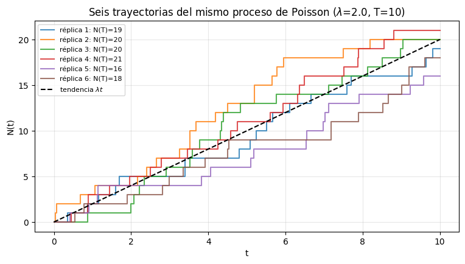
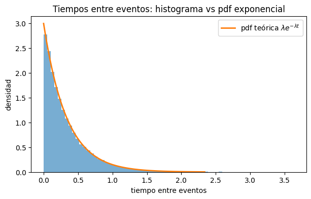
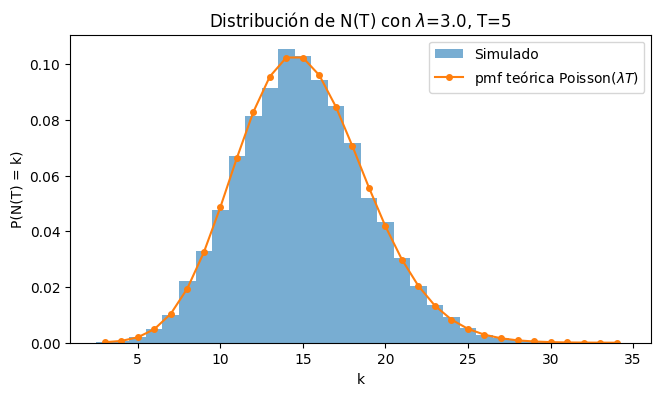
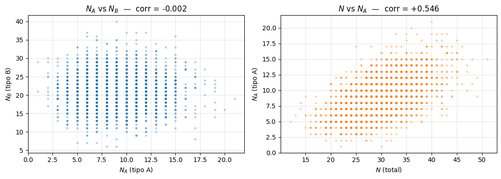

Complementaria Semana 6: Simulación de un Proceso de Poisson#
Llevas dos semanas escribiendo esta línea sin detenerte a pensar qué es:
yield env.timeout(random.expovariate(lam))
Ese generador de llegadas que usaste para la cola M/M/1 es un proceso de Poisson. Hoy le ponemos nombre, estudiamos sus propiedades y verificamos —simulando— que efectivamente se comporta como dice la teoría.
Objetivo de hoy#
Al final de la sesión deberías poder mirar un flujo de eventos en el tiempo (llegadas de clientes, llamadas, fallas) y saber qué te permite afirmar el modelo de Poisson y cómo comprobarlo con datos.
Bloque |
Tema |
|---|---|
1 |
Qué es un proceso de Poisson y cómo se simula |
2 |
Verificación 1: los tiempos entre eventos son Exponenciales |
3 |
Verificación 2: \(N(T)\) es Poisson, y dos formas de simular lo mismo |
4 |
Superposición: qué pasa al juntar dos procesos |
5 |
División (thinning): qué pasa al separar uno |
6 |
El puente: tu generador de SimPy es un proceso de Poisson |
7 |
Ejercicio aplicado |
0. Preparación#
Este notebook se trabaja en VS Code, sobre el ambiente virtual de los tutoriales de la semana 1. Si te falta alguna librería, descomenta la primera línea.
# %pip install numpy matplotlib scipy simpy
import numpy as np
import matplotlib.pyplot as plt
import random
import simpy
from scipy import stats
1. ¿Qué es un proceso de Poisson?#
Un proceso de Poisson con tasa \(\lambda > 0\) es un modelo para eventos que ocurren de forma aleatoria en el tiempo. Se denota \(N(t)\) y cuenta cuántos eventos han ocurrido hasta el instante \(t\).
Sirve para modelar llegadas de clientes a una fila, llamadas a un call center, fallas de una máquina, mensajes a un servidor: situaciones donde los eventos ocurren de a uno, de forma independiente, y a un ritmo promedio constante.
La definición que usaremos para simular#
La caracterización más útil en simulación es esta: los tiempos entre eventos son exponenciales independientes.
donde \(T_i\) es el tiempo que pasa entre el evento \(i-1\) y el \(i\), y \(S_n\) es el instante en que ocurre el evento \(n\).
De ahí sale el algoritmo directamente:
Generar \(T_i \sim \text{Exp}(\lambda)\).
Acumular: \(S_n = T_1 + \cdots + T_n\).
Parar cuando \(S_n\) supere el horizonte \(T\).
\(\lambda\) se interpreta como eventos por unidad de tiempo, y \(1/\lambda\) como el tiempo promedio entre eventos.
def simular_proceso_poisson(lam, T, rng):
# Simula un proceso de Poisson de tasa 'lam' en el intervalo [0, T).
# Devuelve los INSTANTES en que ocurren los eventos.
tiempos = []
t = 0.0
while True:
t += rng.exponential(scale=1/lam) # tiempo hasta el siguiente evento ~ Exp(lam)
if t > T: # nos pasamos del horizonte: paramos
break
tiempos.append(t)
return np.array(tiempos)
rng = np.random.default_rng(0)
lam = 2.0 # eventos por unidad de tiempo
T = 10.0 # horizonte
llegadas = simular_proceso_poisson(lam, T, rng)
print(f"Instantes de los eventos: {np.round(llegadas, 3)}")
print(f"\nN(T) = {len(llegadas)} eventos (esperado: lambda*T = {lam*T:.0f})")
Instantes de los eventos: [0.34 0.85 0.86 0.861 1.136 1.951 2.288 2.665 4.074 7.103 8.746 8.747
9.881 9.917]
N(T) = 14 eventos (esperado: lambda*T = 20)
La trayectoria de \(N(t)\)#
\(N(t)\) es una función escalonada: vale 0 hasta el primer evento y sube un escalón cada vez que ocurre uno. Es exactamente el mismo tipo de curva que \(N(t)\) en la complementaria pasada, cuando contábamos clientes en el sistema, solo que aquí nunca baja.
Grafiquemos varias trayectorias en lugar de una, para ver algo importante: todas tienen la misma tasa \(\lambda\), pero ninguna se parece a otra.
plt.figure(figsize=(9, 4.5))
rng_traj = np.random.default_rng(7)
for r in range(6):
ll = simular_proceso_poisson(lam, T, rng_traj)
tiempos = np.concatenate(([0.0], ll, [T]))
conteo = np.concatenate(([0], np.arange(1, len(ll)+1), [len(ll)]))
plt.step(tiempos, conteo, where="post", alpha=0.8, label=f"réplica {r+1}: N(T)={len(ll)}")
plt.plot([0, T], [0, lam*T], "k--", linewidth=1.5, label=r"tendencia $\lambda t$")
plt.title(f"Seis trayectorias del mismo proceso de Poisson ($\\lambda$={lam}, T={T:.0f})")
plt.xlabel("t"); plt.ylabel("N(t)")
plt.legend(fontsize=8); plt.grid(alpha=0.3)
plt.show()

Las seis curvas siguen en promedio la recta \(\lambda t\), pero el número final de eventos varía bastante entre réplicas. Esa dispersión no es ruido a eliminar: es el fenómeno. Es la misma razón por la que en la semana 5 necesitábamos réplicas para estimar \(W_q\).
2. Verificación 1: los tiempos entre eventos son \(\text{Exp}(\lambda)\)#
Lo construimos así por definición, pero verifiquémoslo como si nos hubieran entregado los datos sin decirnos de dónde salen. Tres comprobaciones:
histograma contra la pdf teórica,
media y varianza empíricas contra las teóricas (\(1/\lambda\) y \(1/\lambda^2\)),
test de Kolmogorov–Smirnov, que compara la CDF empírica con la teórica.
lam_v = 3.0
T_largo = 20_000.0
llegadas_largo = simular_proceso_poisson(lam_v, T_largo, rng)
interarribos = np.diff(np.concatenate(([0.0], llegadas_largo)))
print(f"Eventos simulados: {len(llegadas_largo):,}")
print(f"Media : {interarribos.mean():.5f} teórica: {1/lam_v:.5f}")
print(f"Varianza: {interarribos.var(ddof=1):.5f} teórica: {1/lam_v**2:.5f}")
D, pvalor = stats.kstest(interarribos, "expon", args=(0, 1/lam_v)) # scale = 1/lambda
print(f"\nKS: estadístico = {D:.5f}, p-valor = {pvalor:.4f}")
print("El p-valor alto significa que NO hay evidencia para rechazar que sean Exp(lambda).")
plt.figure(figsize=(7, 4))
plt.hist(interarribos, bins=70, density=True, alpha=0.6)
malla = np.linspace(0, np.quantile(interarribos, 0.999), 400)
plt.plot(malla, lam_v*np.exp(-lam_v*malla), linewidth=2, label=r"pdf teórica $\lambda e^{-\lambda t}$")
plt.title("Tiempos entre eventos: histograma vs pdf exponencial")
plt.xlabel("tiempo entre eventos"); plt.ylabel("densidad")
plt.legend(); plt.show()
Eventos simulados: 59,986
Media : 0.33341 teórica: 0.33333
Varianza: 0.11217 teórica: 0.11111
KS: estadístico = 0.00394, p-valor = 0.3081
El p-valor alto significa que NO hay evidencia para rechazar que sean Exp(lambda).

3. Verificación 2: \(N(T) \sim \text{Poisson}(\lambda T)\)#
La otra cara del proceso. Si los tiempos entre eventos son \(\text{Exp}(\lambda)\), entonces el número de eventos en un horizonte \(T\) sigue una distribución de Poisson:
Fíjate en esa igualdad entre media y varianza: es una firma característica de la Poisson y una de las primeras cosas que se revisan cuando uno quiere saber si un conteo real se puede modelar así.
Para verificarlo repetimos la simulación muchas veces y guardamos cuántos eventos hubo en cada réplica.
lam_n, T_n, R = 3.0, 5.0, 20_000
# Método 1: simular las llegadas una por una y contarlas
NT = np.array([len(simular_proceso_poisson(lam_n, T_n, rng)) for _ in range(R)])
print(f"E[N(T)] empírica: {NT.mean():.4f} teórica: {lam_n*T_n:.4f}")
print(f"Var[N(T)] empírica: {NT.var(ddof=1):.4f} teórica: {lam_n*T_n:.4f}")
# Comparación de la distribución completa contra la pmf teórica
valores = np.arange(NT.min(), NT.max()+1)
pmf_teo = stats.poisson.pmf(valores, mu=lam_n*T_n)
plt.figure(figsize=(7.5, 4))
plt.hist(NT, bins=np.arange(NT.min(), NT.max()+2)-0.5, density=True, alpha=0.6, label="Simulado")
plt.plot(valores, pmf_teo, "o-", linewidth=1.5, markersize=4, label=r"pmf teórica Poisson($\lambda T$)")
plt.title(f"Distribución de N(T) con $\\lambda$={lam_n}, T={T_n:.0f}")
plt.xlabel("k"); plt.ylabel("P(N(T) = k)")
plt.legend(); plt.show()
E[N(T)] empírica: 14.9968 teórica: 15.0000
Var[N(T)] empírica: 15.1692 teórica: 15.0000

Dos formas de simular exactamente el mismo proceso#
Acabamos de simular generando los tiempos entre eventos uno por uno. Pero hay una segunda forma, y es mucho más rápida:
Sortear cuántos eventos habrá: \(N(T) \sim \text{Poisson}(\lambda T)\).
Repartir esos \(N(T)\) eventos uniformemente al azar dentro de \([0, T]\) y ordenarlos.
Que esto funcione no es obvio, y es un resultado interesante: dado que ocurrieron \(n\) eventos en \([0,T]\), sus instantes se distribuyen como \(n\) uniformes ordenadas. Un proceso de Poisson no tiene preferencia por ningún momento del intervalo.
Comprobemos que las dos formas producen lo mismo:
def simular_poisson_uniformes(lam, T, rng):
# Método 2: primero cuántos, después dónde
n = rng.poisson(lam*T)
return np.sort(rng.uniform(0, T, size=n))
# Comparamos la distribución de N(T) por ambos métodos
NT_metodo2 = rng.poisson(lam_n*T_n, size=R)
print(f"Método 1 (interarribos): E = {NT.mean():.4f} Var = {NT.var(ddof=1):.4f}")
print(f"Método 2 (uniformes) : E = {NT_metodo2.mean():.4f} Var = {NT_metodo2.var(ddof=1):.4f}")
ks = stats.ks_2samp(NT, NT_metodo2)
print(f"\nKS de dos muestras entre ambos métodos: p-valor = {ks.pvalue:.4f}")
print("No se distinguen: son el mismo proceso.")
# Y los tiempos del método 2 también dan interarribos exponenciales
tiempos_m2 = simular_poisson_uniformes(lam_v, T_largo, rng)
p2 = stats.kstest(np.diff(tiempos_m2), "expon", args=(0, 1/lam_v)).pvalue
print(f"KS de los interarribos del método 2 vs Exp(lambda): p-valor = {p2:.4f}")
Método 1 (interarribos): E = 14.9968 Var = 15.1692
Método 2 (uniformes) : E = 14.9650 Var = 14.8597
KS de dos muestras entre ambos métodos: p-valor = 0.6581
No se distinguen: son el mismo proceso.
KS de los interarribos del método 2 vs Exp(lambda): p-valor = 0.7463
Cuándo usar cada uno: Si solo te interesa cuántos eventos hubo, el método 2 es inmediato y evita el bucle. Si necesitas los instantes para alimentar una simulación —como el generador de llegadas de SimPy, que va entregando clientes a medida que el reloj avanza— el método 1 es el natural, porque produce los eventos en orden y sobre la marcha.
4. Superposición: juntar dos procesos#
Si \(N_1(t)\) y \(N_2(t)\) son procesos de Poisson independientes con tasas \(\lambda_1\) y \(\lambda_2\), entonces el proceso que resulta de juntar todos sus eventos es un proceso de Poisson con tasa
Es lo que pasa cuando dos flujos de clientes llegan a la misma fila, o cuando dos tipos de falla alimentan el mismo registro de mantenimiento.
Lo que hay que verificar ahora es que el proceso fusionado sea un proceso de Poisson, y para eso hay que mezclar los instantes de los eventos y mirar los tiempos entre ellos.
lam1, lam2 = 2.0, 5.0
T_sup = 20_000.0
eventos_1 = simular_proceso_poisson(lam1, T_sup, rng)
eventos_2 = simular_proceso_poisson(lam2, T_sup, rng)
# Fusionamos los INSTANTES de ambos procesos y los ordenamos
fusionado = np.sort(np.concatenate([eventos_1, eventos_2]))
inter_fus = np.diff(fusionado)
print(f"Eventos del proceso 1: {len(eventos_1):,}")
print(f"Eventos del proceso 2: {len(eventos_2):,}")
print(f"Eventos fusionados : {len(fusionado):,} (esperado: {(lam1+lam2)*T_sup:,.0f})")
print(f"\nMedia de los interarribos fusionados: {inter_fus.mean():.5f}")
print(f"Teórica 1/(lambda1+lambda2) : {1/(lam1+lam2):.5f}")
p_sup = stats.kstest(inter_fus, "expon", args=(0, 1/(lam1+lam2))).pvalue
print(f"\nKS de los interarribos fusionados vs Exp(lambda1+lambda2): p-valor = {p_sup:.4f}")
Eventos del proceso 1: 40,197
Eventos del proceso 2: 99,930
Eventos fusionados : 140,127 (esperado: 140,000)
Media de los interarribos fusionados: 0.14273
Teórica 1/(lambda1+lambda2) : 0.14286
KS de los interarribos fusionados vs Exp(lambda1+lambda2): p-valor = 0.8671
El p-valor alto confirma lo que importa: al juntar los dos flujos resulta otra vez un proceso de Poisson, ahora con tasa \(\lambda_1 + \lambda_2 = 7\). Por eso en un modelo de colas puedes sumar todas las fuentes de llegada en un único \(\lambda\) y seguir usando las fórmulas de la M/M/1.
5. División (thinning): separar un proceso#
La operación inversa. Si \(N(t)\) es Poisson con tasa \(\lambda\) y cada evento se clasifica de forma independiente como tipo A con probabilidad \(p\) y tipo B con probabilidad \(1-p\), entonces:
Es el caso de un call center donde las llamadas se separan en soporte y ventas, o de una línea de producción donde las piezas se clasifican en conformes y no conformes.
Hasta aquí es lo esperado. Lo que no es esperado es esto:
\(N_A\) y \(N_B\) son independientes entre sí.
Piénsalo un segundo antes de seguir. Los dos salen del mismo proceso y además cumplen \(N_A + N_B = N\) exactamente. Si por ejemplo hoy hubo muchas llamadas de soporte, ¿no deberías esperar que hubo muchas llamadas en total, y por lo tanto también más llamadas de ventas? Pues no: saber \(N_A\) no te dice nada sobre \(N_B\).
lam_d, p_A = 6.0, 0.3
T_d, R_d = 5.0, 40_000
# Simulamos el total y clasificamos: dado N eventos, los de tipo A son Binomial(N, p)
N_total = rng.poisson(lam_d*T_d, size=R_d)
N_A = rng.binomial(N_total, p_A)
N_B = N_total - N_A
print("Tasas:")
print(f" E[NA] = {N_A.mean():7.4f} teórica: {p_A*lam_d*T_d:.4f}")
print(f" E[NB] = {N_B.mean():7.4f} teórica: {(1-p_A)*lam_d*T_d:.4f}")
print(f" Var[NA] = {N_A.var(ddof=1):7.4f} teórica: {p_A*lam_d*T_d:.4f}")
print(f" Var[NB] = {N_B.var(ddof=1):7.4f} teórica: {(1-p_A)*lam_d*T_d:.4f}")
print("\nIndependencia:")
print(f" corr(NA, NB) = {np.corrcoef(N_A, N_B)[0,1]:+.4f} <- prácticamente cero")
print(f" corr(N , NA) = {np.corrcoef(N_total, N_A)[0,1]:+.4f} <- el total sí correlaciona, claro")
Tasas:
E[NA] = 8.9868 teórica: 9.0000
E[NB] = 21.0002 teórica: 21.0000
Var[NA] = 8.9927 teórica: 9.0000
Var[NB] = 21.0284 teórica: 21.0000
Independencia:
corr(NA, NB) = -0.0020 <- prácticamente cero
corr(N , NA) = +0.5461 <- el total sí correlaciona, claro
fig, ejes = plt.subplots(1, 2, figsize=(11, 4))
ejes[0].scatter(N_A[:3000], N_B[:3000], s=6, alpha=0.25)
ejes[0].set_title(f"$N_A$ vs $N_B$ — corr = {np.corrcoef(N_A, N_B)[0,1]:+.3f}")
ejes[0].set_xlabel("$N_A$ (tipo A)"); ejes[0].set_ylabel("$N_B$ (tipo B)")
ejes[1].scatter(N_total[:3000], N_A[:3000], s=6, alpha=0.25, color="tab:orange")
ejes[1].set_title(f"$N$ vs $N_A$ — corr = {np.corrcoef(N_total, N_A)[0,1]:+.3f}")
ejes[1].set_xlabel("$N$ (total)"); ejes[1].set_ylabel("$N_A$ (tipo A)")
for e in ejes: e.grid(alpha=0.3)
plt.tight_layout(); plt.show()

La nube de la izquierda es redonda, por lo que no hay ninguna tendencia. Mientras que la de la derecha es claramente inclinada.
¿Por qué funciona así? Porque el total \(N\) no es un número fijo, es aleatorio. Cuando \(N_A\) sale alto, eso es evidencia de que \(N\) era alto, y las dos cosas se cancelan exactamente. Si el total estuviera fijo en \(n\), entonces sí tendríamos \(N_B = n - N_A\) y la correlación sería \(-1\) perfecta.
Para qué sirve en la práctica: si el 65% de las llamadas de un call center son de soporte, puedes dimensionar el equipo de soporte tratándolo como un sistema aparte con tasa \(0.65\lambda\), sin preocuparte por lo que hace ventas. Eso es lo que hace manejable el modelado de sistemas con varias clases de clientes.
6. El puente: tu generador de SimPy es un proceso de Poisson#
Volvamos al comienzo. En las semanas 4 y 5 el generador de llegadas era este:
def generador(env):
while True:
yield env.timeout(random.expovariate(lam))
env.process(cliente(env, ...))
Eso es exactamente el algoritmo de la sección 1: esperar un tiempo \(\text{Exp}(\lambda)\), registrar un evento, repetir. Es un proceso de Poisson, construido sin haberlo nombrado.
Compruébalo: dejamos correr el generador de SimPy y le aplicamos las mismas verificaciones de hoy.
random.seed(1)
lam_s, T_s = 3.0, 5_000.0
llegadas_simpy = []
def generador_llegadas(env):
while True:
yield env.timeout(random.expovariate(lam_s))
llegadas_simpy.append(env.now)
env = simpy.Environment()
env.process(generador_llegadas(env))
env.run(until=T_s)
llegadas_simpy = np.array(llegadas_simpy)
# ¿Cuántos eventos hubo en cada unidad de tiempo? -> debería ser Poisson(lam)
N_por_unidad = np.histogram(llegadas_simpy, bins=np.arange(0, T_s+1, 1))[0]
print(f"Eventos generados por SimPy: {len(llegadas_simpy):,}\n")
print(f"E[N(1)] = {N_por_unidad.mean():.4f} teórica: {lam_s}")
print(f"Var[N(1)] = {N_por_unidad.var(ddof=1):.4f} teórica: {lam_s}")
print(f"P(N(1)=0) = {np.mean(N_por_unidad == 0):.4f} teórica: {stats.poisson.pmf(0, lam_s):.4f}")
p_simpy = stats.kstest(np.diff(llegadas_simpy), "expon", args=(0, 1/lam_s)).pvalue
print(f"\nKS de los interarribos vs Exp({lam_s}): p-valor = {p_simpy:.4f}")
Eventos generados por SimPy: 15,036
E[N(1)] = 3.0072 teórica: 3.0
Var[N(1)] = 3.0930 teórica: 3.0
P(N(1)=0) = 0.0510 teórica: 0.0498
KS de los interarribos vs Exp(3.0): p-valor = 0.6573
Todo lo que sabes del proceso de Poisson aplica a tus modelos de SimPy. Si un sistema recibe dos flujos de clientes con tasas \(\lambda_1\) y \(\lambda_2\), no necesitas dos generadores: por superposición, uno solo con \(\lambda_1 + \lambda_2\) produce el mismo sistema. Y si dentro de un flujo el 30% de los clientes son de un tipo especial, por división puedes tratarlos como un proceso independiente de tasa \(0.3\lambda\).
7. Ejercicio aplicado: centro de atención#
Un centro de atención recibe llamadas según un proceso de Poisson con tasa \(\lambda = 8\) llamadas por hora. Cada llamada se clasifica, de forma independiente, como:
Soporte con probabilidad \(p = 0.65\)
Ventas con probabilidad \(1 - p = 0.35\)
La celda de abajo ya corre, pero está incompleta. Reemplaza cada # TODO.
lam_cc = 8.0 # llamadas por hora
p_sop = 0.65 # probabilidad de que una llamada sea de soporte
R_cc = 50_000 # horas simuladas
rng_cc = np.random.default_rng(2026)
# ---------- Parte A: conteos en una hora ----------
# TODO A.1: simula R_cc horas de operación. N1 debe ser un array con el número
# de llamadas de cada hora. (pista: rng_cc.poisson)
N1 = np.zeros(R_cc, dtype=int) # <-- placeholder, reemplázalo
# TODO A.2: estima E[N(1)], Var(N(1)) y P(N(1) >= 12), y compáralos con la teoría.
# Para la teórica de la probabilidad usa stats.poisson.cdf
# ---------- Parte B: división por tipo ----------
# TODO B.1: para cada hora, ¿cuántas de esas llamadas fueron de soporte?
# (pista: dado que hubo N llamadas, las de soporte son Binomial(N, p))
NS = np.zeros(R_cc, dtype=int) # <-- placeholder
NV = np.zeros(R_cc, dtype=int) # <-- placeholder
# TODO B.2: estima E[NS] y E[NV] y compáralos con p*lam y (1-p)*lam
# TODO B.3: estima P(NS = 0) y P(NV >= 5) y compáralos con la teoría
# TODO B.4: calcula la correlación entre NS y NV. ¿Qué esperabas y qué te dio?
Parte C — La pregunta del jefe de ventas#
El equipo de ventas son dos personas y quieren irse a almorzar juntas, 30 minutos, dejando el teléfono de ventas sin atender.
Responde con un número: ¿cuál es la probabilidad de que en esos 30 minutos no entre ninguna llamada de ventas?
Calcúlala de dos formas —por simulación y con la fórmula teórica— y que coincidan. Después responde en una frase: ¿le recomendarías al jefe de ventas que se vayan?
Piensa qué tasa y qué horizonte tienes que usar. No son los del enunciado original.
# TODO C: probabilidad de que no entre ninguna llamada de ventas en 30 minutos
# (por simulación y por fórmula)
Solución (ábrela solo después de intentarlo)
Ni lo intentes ;)
Aquí no hay solución, este ejercicio es lo último que haces antes del Laboratorio 1, así que es tu mejor oportunidad para descubrir qué no te quedó claro mientras todavía puedes pedir ayuda.
Todo lo que necesitas ya lo corriste hoy. La parte A es la sección 3, la parte B es la sección 5, y la parte C es la misma idea de la parte B pero cambiando la tasa y el horizonte.
Cuando tengas tus números, compáralos con tu compañero y luego los revisan con el asistente graduado.
Resumen del módulo#
Cierra aquí el primer módulo del curso. Lo que hay que llevarse a al Laboratorio 1 es esto:
Semana |
Idea que se evalúa |
|---|---|
1 |
Python y NumPy: vectorizar en vez de iterar cuando se puede |
2 |
Monte Carlo estima, no calcula. El error viene del tamaño de muestra |
2 |
Transformada inversa: \(X = F^{-1}(U)\) convierte uniformes en cualquier distribución |
3 |
TLC: los promedios se vuelven Normales, y eso permite poner intervalos de confianza a una estimación de simulación |
4 |
SimPy: entorno, procesos, |
5 |
Colas: medir \(W_q\) y \(W\) sobre clientes, \(L\) y \(L_q\) sobre el tiempo. Ley de Little. Nunca concluir de una sola corrida |
6 |
Poisson: el modelo de las llegadas, y sus propiedades de superposición y división |